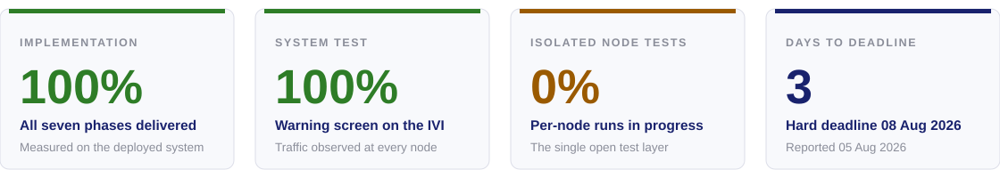
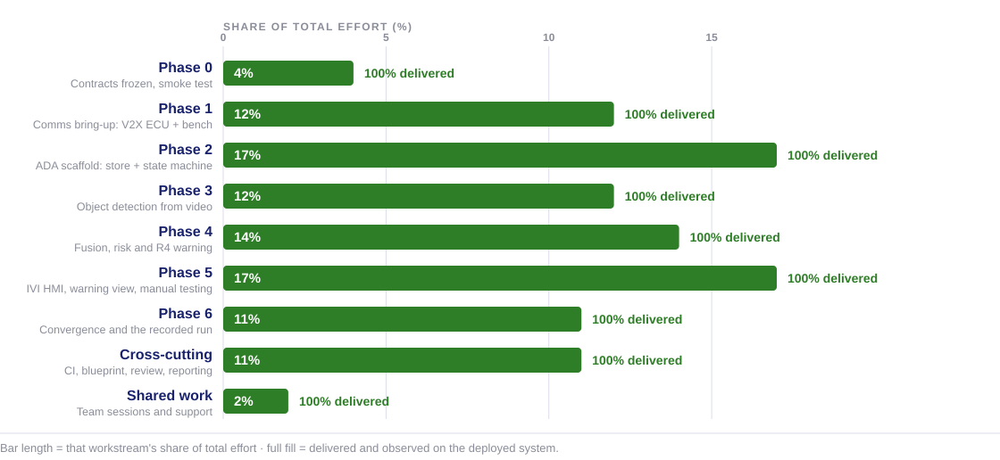
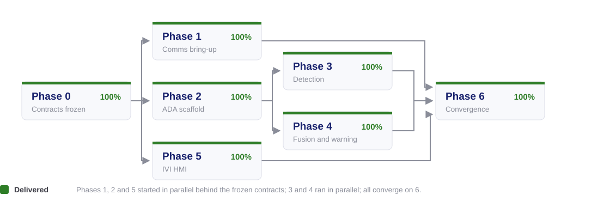
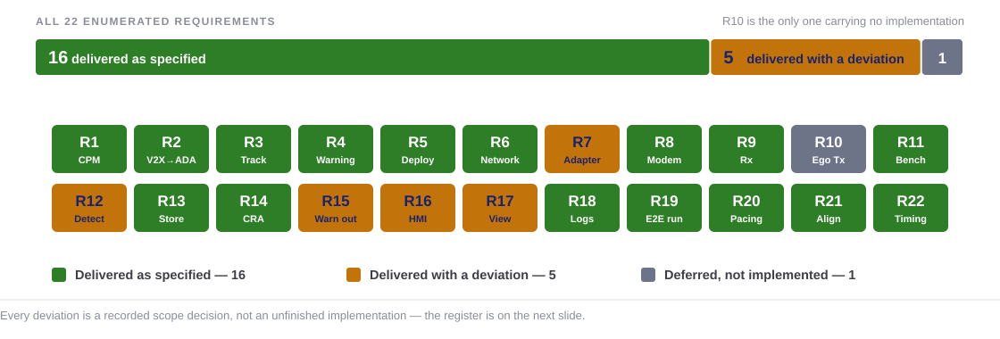
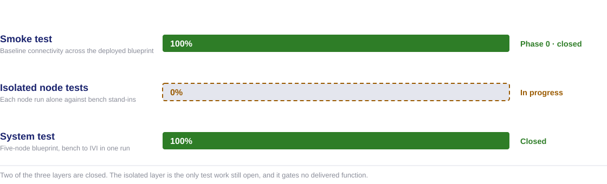
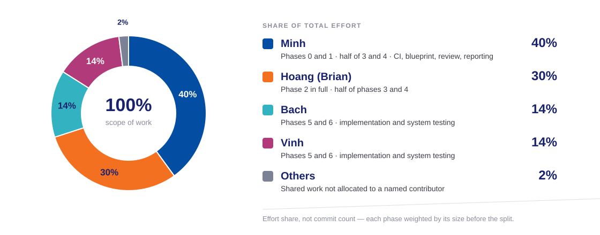
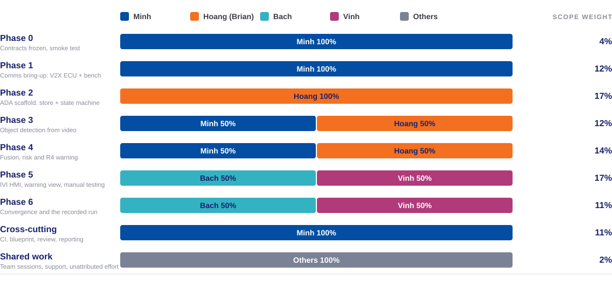
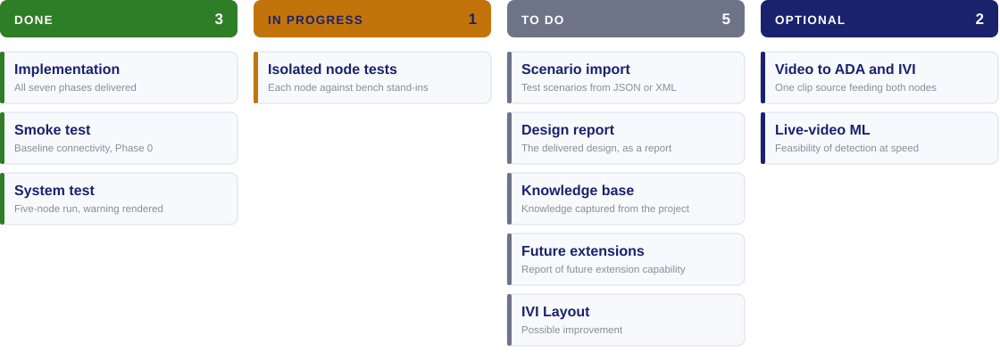

the headline numbers and how they are measured
progress by workstream, and what each phase delivered
the 22 requirements and the six that deviate
the three test layers and what each one proves
scope of work by contributor
what is open, and what it blocks
The system does the thing the milestone was defined by: vehicle A warns its driver about vehicle C, which A's own sensors never see.

Percentages here come from observable system behaviour, not from a task board.
| Workstream | Weight | Why it carries that weight |
|---|---|---|
| Phase 0 · contracts | 4% | Contract documents, schemas, and a single connectivity smoke test |
| Phase 1 · comms | 12% | Two node folders in two languages, plus the shared codec seam |
| Phase 2 · ADA scaffold | 17% | The ADA skeleton, the track store, and the admission state machine |
| Phase 3 · detection | 12% | Detector export, video decode, distance estimation, subprocess contract |
| Phase 4 · fusion | 14% | Relayed-object fusion, risk abstraction, warning emission, isolated bench |
| Phase 5 · IVI HMI | 17% | The HMI, the warning view, and the manual system testing built around it |
| Phase 6 · convergence | 11% | Small to build, but it carries the manual end-to-end testing and the recorded run |
| Cross-cutting | 11% | CI lanes, blueprint design, code review, management and reporting |
| Shared work | 2% | Team sessions, support, and effort not allocated to one contributor |


| Phase | Delivered | Observable in the running system |
|---|---|---|
| 0 | Six frozen contracts, the blueprint topology, the smoke test | Every node reachable on the bridge network |
| 1 | V2X ECU receive path and the bench that feeds it | Scenario-driven CPMs decoded into object messages |
| 2 | ADA track store and the admission state machine | Tracks admitted and dropped by configured gates, no flicker |
| 3 | Detector on the recorded clip, distance estimation | Vehicle B found per frame; zero detections labelled C |
| 4 | Relayed-C fusion, risk assessment, warning emission | Ghost C tracked from the relay alone; warnings emitted |
| 5 | The AAOS HMI and the warning view | Ego, B and ghost C drawn on screen from warning messages alone |
| 6 | Real data end to end, and the recorded run | One continuous run with no mock anywhere in the ego path |

Each of the six is a decision on the record, not an implementation that fell short.
| Requirement | Deviation | Why |
|---|---|---|
| R7 — radio adapter seam | The seam declares send; nothing calls it | Ego transmission moved to a future milestone, so the send path has no caller |
| R10 — ego Tx | Not implemented | Deferred by decision; the V2X ECU is receive-only in this milestone |
| R12 — object detection | Runs on a recorded clip at an offline pace, looped for longer runs | Live detection at road speed is future scope; CPU-only was the platform constraint |
| R15 — warning output | Edge-triggered warnings only; no periodic awareness state | The periodic state was optional in the phase's own acceptance |
| R16 — HMI | Warning view in the Display area; no ego dashcam clip | Deferred by user decision, 2026-08-02; the design is on the shelf, unbuilt |
| R17 — warning view | 2D canvas delivered; no 3D SceneView | 3D was optional throughout; the view seam still admits it unchanged |

| Layer | State | What it proves that the others cannot |
|---|---|---|
| Smoke test | 100% — closed in Phase 0 | The network and the deployment work before any product code is judged |
| Isolated node tests | 0% — in progress | Which node is at fault when the chain misbehaves, by exercising each one alone |
| System test | 100% — closed | The whole chain produces the warning a driver actually sees |
One run of the five-node blueprint, bench to screen, with traffic observed at every node.
| Node | Address | What it contributed to the run |
|---|---|---|
| Scenario Player (bench) | 10.99.0.10 | Scenario-driven CPMs describing vehicle C, on UDP 47100 |
| V2X ECU | 10.99.0.11 | Decoded and validated CPMs, forwarded as object messages on 47200 |
| ADA ECU | 10.99.0.12 | Vehicle B from its own detector, ghost C from the relay, warnings on 47300 |
| IVI ECU (AAOS) | 10.99.0.13 | The warning screen — ego, B and ghost C drawn from the warning message alone |
| Ethernet Bridge | 10.99.0.1 | The L2 network every node's pin attaches to |



| Item | What it covers | Where it lands |
|---|---|---|
| Isolated node tests | Each node exercised alone against bench stand-ins for its neighbours | The node folders and their walkthroughs |
| Design report | The delivered design presented as a report, not as phase decks | presentation/ |
| Knowledge base | Platform, node and CI know-how written up for reuse | presentation/KnowledgeBase/ |
| ADA code improvements | Clean-up behind behaviour that already works | ADA_ECU/ |
| IVI code improvements | Clean-up behind the delivered screen | IVI_ECU/ |
| IVI layout improvement | Possible rework of the warning-view layout, subject to review | IVI_ECU/ |
Milestone 1 — Cooperative Vehicle Awareness · FPT Hackathon 2026